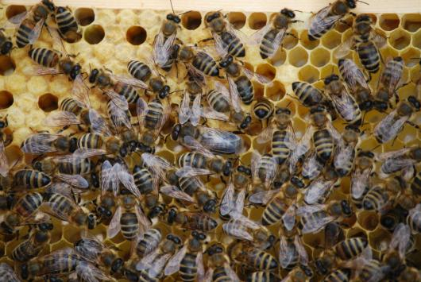

Apis Innovation: z vesmíru ke včelám
Kosmické izolační materiály pomohly zdokonalit termosolární úl. TC Praha firmě Apis Innovation zprostředkovalo technologie i spolupráci s jejich poskytovateli.
Zjisti víc
Thermosolar Hive využívá sluneční teplo proti kleštíku včelímu. Firma hledala materiály pro další varianty úlu.
TC Praha prověřilo patenty ESA a doporučilo termoizolační materiály včetně aerogelů. Pomohlo také navázat spolupráci s poskytovateli technologií.
Výsledkem byl lehčí úl s lepší izolací pro různé klimatické podmínky. Projekt získal i druhé místo v soutěži ESA Get Space Inspired.
Původní článek TC Praha (otevře se v novém okně)